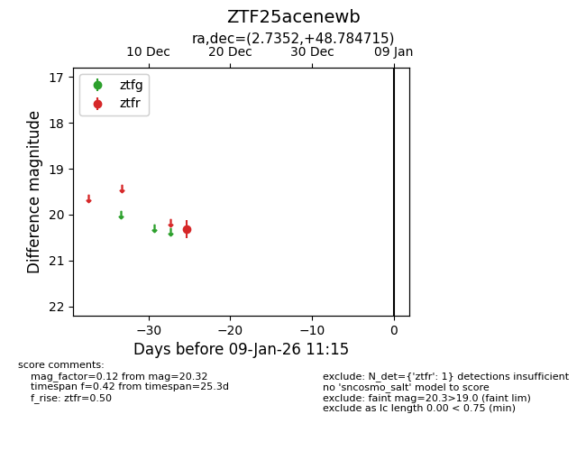
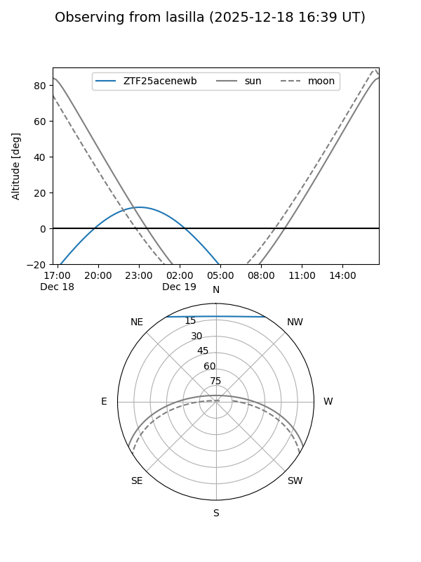
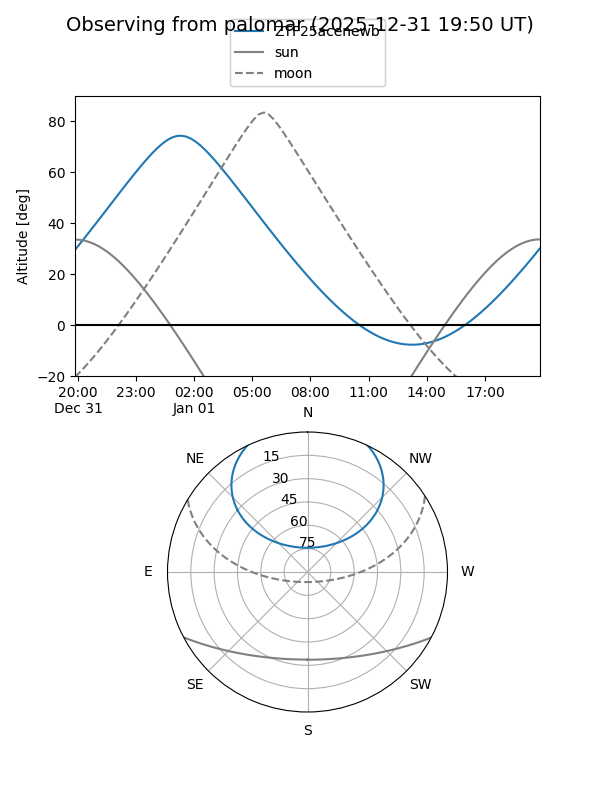

ZTF25acenewb
Target ZTF25acenewb at 2026-01-09 12:49
Aliases and brokers:
FINK: link
Lasair: link
ALeRCE: link
alt names
ZTF25acenewb (ztf,fink_ztf)
Coordinates:
equatorial (ra, dec) = 2.7352,+48.78471
equatorial (HMS+DMS) = 00:10:56.45,+48:47:04.97
galactic (l, b) = (116.0896,-13.54827)
Flags:
Photometry:
last ztfr=20.32
1 ztfr detections
Lightcurve

Visibility


Additional plots